二重に入った割り当てをまとめる
アドオンなどで同じ割り当てが二重に入っていると、後の行の状況が「先行項目が優先」と出ます。「重複キーマップを集約」で 1 件にまとめられます。

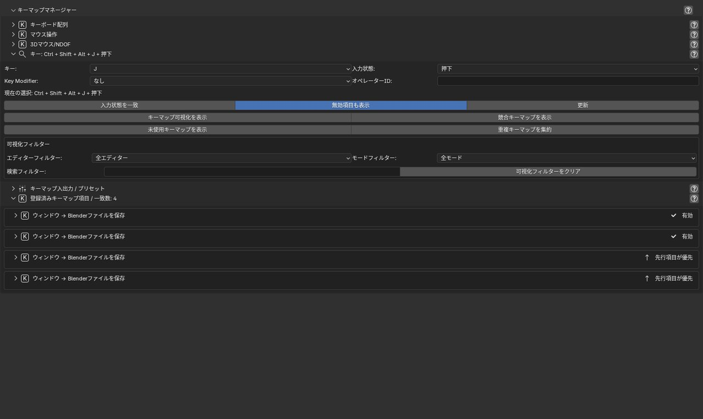

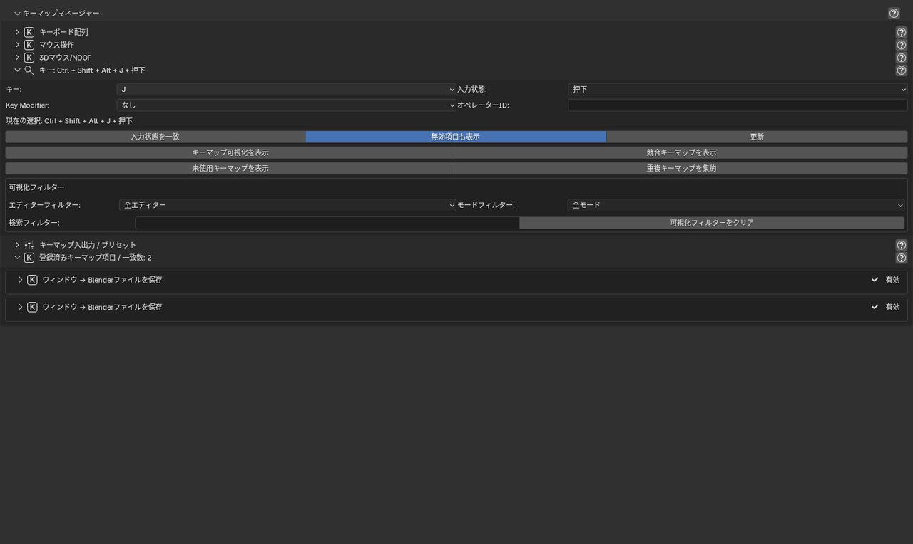
SmartTools アドオン解説書 ／ 付属ツール
版 1.0.0 ／ 2026年11月18日 ／ Blender 5.1.2 用
キーマップマネージャーは、SmartTools に付属するツールです。キーマップとは、キーと機能の割り当て表のことです。Blender にはとても多くのショートカットがあり、同じキーが別の機能にも使われていることがあります。このアドオンは、プリファレンスの「キーマップ」の画面に「キーマップマネージャー」という見出しを足します。キーボードの絵のキーを押すと、そのキーに割り当てられた機能が一覧で出ます。どの割り当てが優先されて、どれが隠れているかも分かります。重複のまとめ、空いているキーの検索、キーマップの書き出し・読み込み・プリセット（名前を付けて保存した設定）もここで行えます。インストールと日本語化の方法は、全体仕様書の該当の章を見てください。
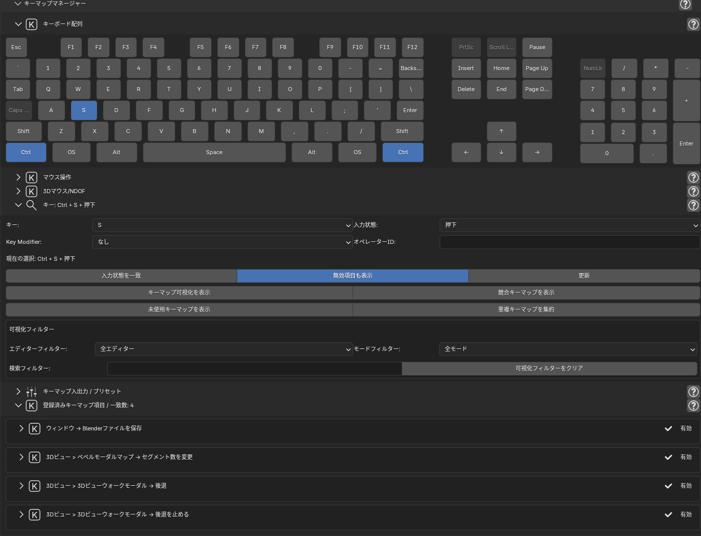
「編集」→「プリファレンス」→「キーマップ」を選び、画面の一番下まで移動します。最初は閉じている「キーマップマネージャー」を開いてください。
これは登録内容を調べる操作画面で、キーボード図のCtrlとSを選んだときの一致数と各行の状態が見えます。
画面のキーボードでCtrlをオンにし、Sを選びます。複数の割り当てがあったら、各行の状態と、それが働くエディターを確認します。
Ctrl+Sの場合、登録済み項目の件数と各行の有効状態を確認します。

優先元の2行を確認して対象を有効にすると、作例では優先元の2件が無効になります。変更される割り当てが見える状態で判断できます。
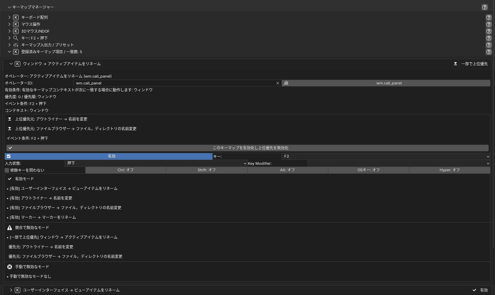
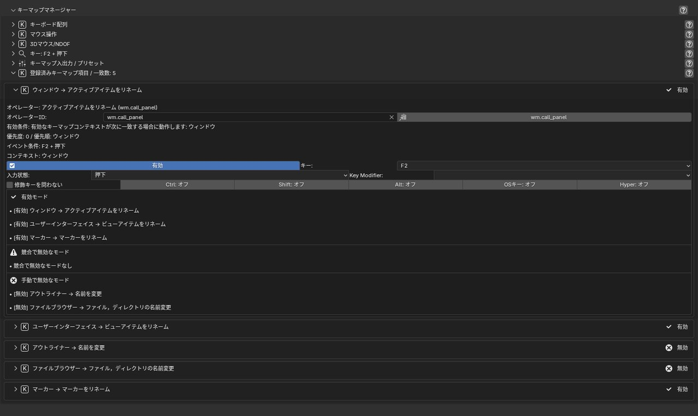
試す前に 先にキー設定を控え、無効化される2行を確認する。
この作例の手順を見る作例を画像で保存 (PNG)導入・トラブルのヘルプ
アドオンなどで同じ割り当てが二重に入っていると、後の行の状況が「先行項目が優先」と出ます。「重複キーマップを集約」で 1 件にまとめられます。


「変更済みのみ」で書き出すと、自分で足した割り当てだけがファイルになります。読み込むと、その割り当てが戻ります。

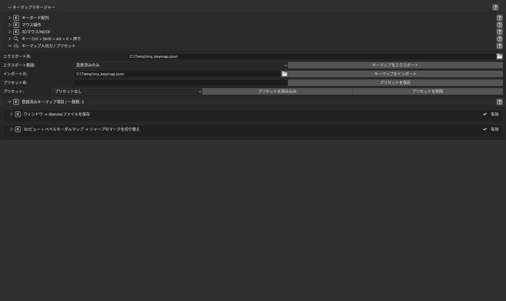
SmartTools に付属するツールです。キーボードの形の画面からショートカットを調べ、重なり（競合）を見つけて直せます。
このアドオンを使うと、画面は次のように変わります。くわしい操作は 5 章の各機能の「実例」で説明します。
実例キーを押して、そのキーの割り当てを調べる（プリファレンスのキーマップ画面で試した様子）
キーボードの絵でキーと修飾キーを押すと、その組み合わせに割り当てられた機能が下の一覧に並びます。Ctrl+S と Ctrl+Shift+S のように、組み合わせごとに分けて調べられます。

見どころ：前は「Ctrl」と「S」が押された見た目で、一覧の先頭に「Blenderファイルを保存」が出ています。ベベルのモーダルの行があっても、「Blenderファイルを保存」は「有効」のままです（モーダルは数えません）。後は「Shift」も押された見た目になり、見出しが「キー: Ctrl + Shift + S + 押下」に変わって、一覧の先頭が「名前を付けて保存」に切り替わっています。
このアドオンならではの機能を、図に番号を付けて説明します。図の中の番号と、図の下の一覧の番号が対応しています。図を押すと大きく表示されます。設定の一つ一つは 5 章の各見出しで説明します。
Blender のショートカットは数千件あり、プリファレンスの一覧を探しても「このキーは何に使われているか」はすぐには分かりません。キーマップマネージャーでは、キーボードの絵のキーを押すだけで、そのキーの割り当てが全部、優先の順と状況つきで並びます。逆に機能の内部名を入れると、その機能のキーが絵の上で光ります。
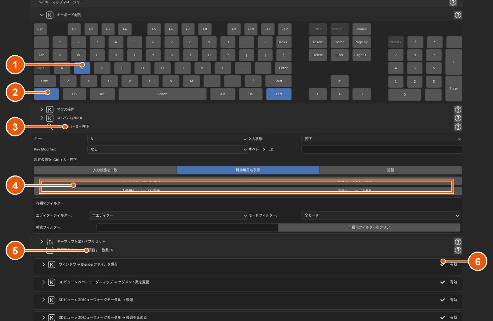
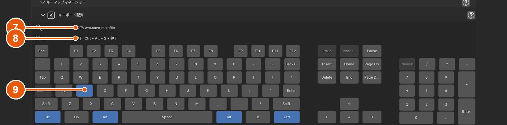
くわしい設定：5-1. キーボード配列（キーボードの絵）、5-4. キー: （選んでいるキー）、5-6. 登録済みキーマップ項目 / 一致数
同じキーを複数の機能が使っていると、押した時にどちらが動くかが分かりにくくなります。「競合キーマップを表示」は、同じ場所で同じキーを使う割り当てをグループにして並べ、どちらが先に受け取るかを状況で示します。別の場所の割り当てに隠れているキーは、詳細のボタン 1 つで表に出せます。
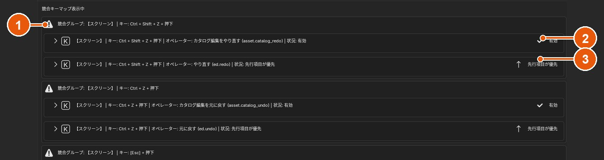
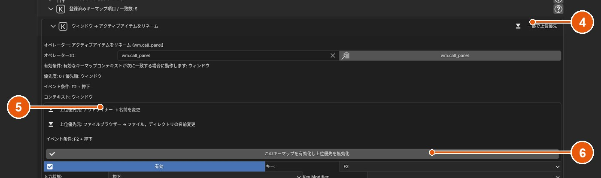
「キーマップ可視化」は、割り当てのあるキーを絵の上で青く示し、キーごとに件数をまとめます。「未使用キーマップ」はその逆で、カテゴリーごとにまだ使われていないキーの候補を出します。自分のショートカットを足す前に、空いているキーをすぐに探せます。
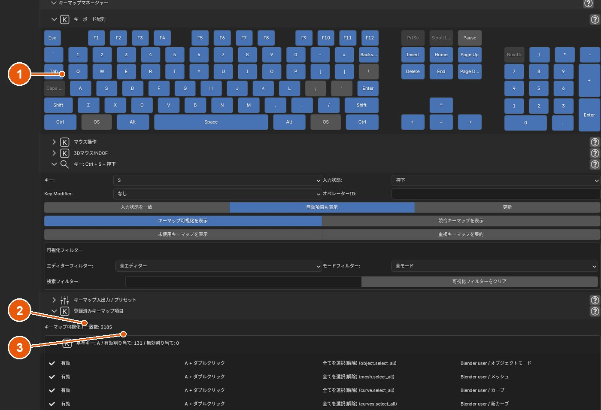
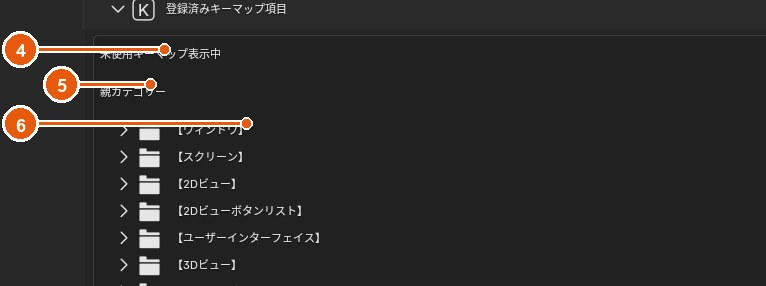
くわしい設定：5-9. キーマップ可視化、5-8. 未使用キーマップ表示
アドオンの入れ方・画面を日本語にする方法・N パネルと「？」ヘルプの共通の使い方は、「SmartTools 全体仕様書」にまとめています。先にそちらの 2〜5 章を読んでください。
| 入れる ZIP | KeymapManager_1.0.0.zip |
|---|---|
| Blender の画面での名前 | Keymap Manager |
| 動く Blender | 5.1.2 |
プリファレンス（Blender の設定画面）の「キーマップ」の中にある「キーマップマネージャー」という見出しです。3D ビューのサイドバーには出ません。見出しの右の「？」で、使い方の短いヘルプが開きます。
| 出る画面 | プリファレンス |
|---|---|
| タブ | キーマップ |
画面の上から順に、見出しごとに説明します。見出しの右の「？」を押すと、同じ内容の説明が画面にも出ます。青い枠の「実例」は、スザンヌなどの簡単なモデルで実際に操作し、3D ビューでの変化を前と後で並べたものです。
キーボードの形にボタンが並んだ部分です。キーを押すと、そのキーの割り当てが下の「登録済みキーマップ項目」に出ます。
場所「キーマップマネージャー」を開いたいちばん上。初めは開いています。見出しの右の「？」を押すと、この部分のヘルプが開きます。
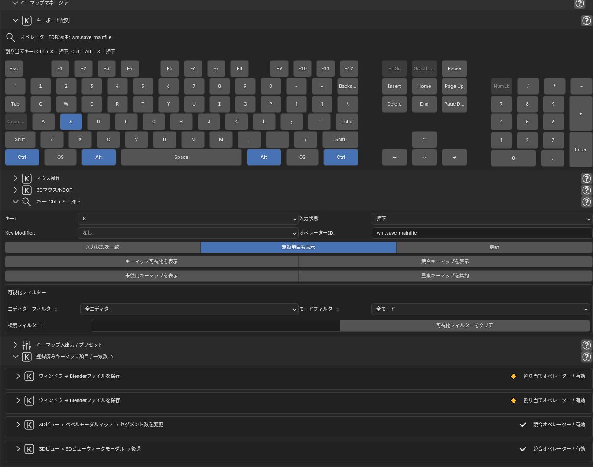
| 表示 | 働き |
|---|---|
| 文字・数字・記号・F1〜F12・矢印・テンキーなどのキー | 押すとそのキーが選ばれ、押されたままの見た目になります。一致する割り当てが下の一覧に出ます。キーを押すと「オペレーターID」は空になり、ふつうの一覧の表示に戻ります。 |
| Ctrl・Shift・Alt・OS（修飾キー） | 押すたびに入・切が変わります。入れた修飾キーを一緒に押すショートカットだけが出ます。全部切なら、修飾キーなしの割り当てが出ます。これで S と Ctrl+S を分けて調べられます。修飾キーが「任意」の割り当ては、入・切のどちらでも出ます。 |
| 灰色で押せないキー（Caps Lock・PrtSc・Scroll Lock・NumLk など） | Blender ではショートカットに使えないキーです。形を合わせるために表示だけしています。 |
| 「オペレーターID検索中」「割り当てキー」 | 「オペレーターID」欄に入力している時だけ出ます。その機能が割り当てられたキーが、絵の上で押された見た目になり、「割り当てキー」に文字でも並びます。 |
実例キーを押して、そのキーの割り当てを調べる（プリファレンスのキーマップ画面で試した様子）
キーボードの絵でキーと修飾キーを押すと、その組み合わせに割り当てられた機能が下の一覧に並びます。Ctrl+S と Ctrl+Shift+S のように、組み合わせごとに分けて調べられます。
見どころ：前は「Ctrl」と「S」が押された見た目で、一覧の先頭に「Blenderファイルを保存」が出ています。ベベルのモーダルの行があっても、「Blenderファイルを保存」は「有効」のままです（モーダルは数えません）。後は「Shift」も押された見た目になり、見出しが「キー: Ctrl + Shift + S + 押下」に変わって、一覧の先頭が「名前を付けて保存」に切り替わっています。
マウスのボタン、ホイール、ポインターやトラックパッドの操作を、キーと同じように選んで調べる部分です。入れている修飾キーも条件になります。
場所「キーボード配列」のすぐ下。初めは閉じています。見出しの右の「？」を押すと、この部分のヘルプが開きます。
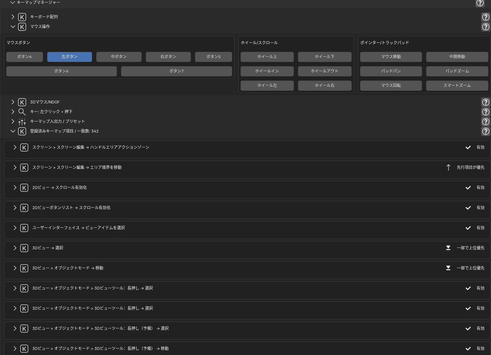
| 表示 | 働き |
|---|---|
| 「マウスボタン」（左ボタン・中ボタン・右ボタン・ボタン4〜ボタン7） | 左・中・右ボタンと、追加のボタンです。押すと、その操作の割り当てが一覧に出ます。 |
| 「ホイール/スクロール」（ホイール上・ホイール下など） | ホイールを回す操作などです。押すと、その操作の割り当てが一覧に出ます。 |
| 「ポインター/トラックパッド」（マウス移動・パッドパン・マウス回転など） | マウスの移動やトラックパッドの操作などです。押すと、その操作の割り当てが一覧に出ます。 |
実例マウスの操作に割り当てられた機能を調べる（プリファレンスのキーマップ画面で試した様子）
「マウス操作」のボタンを押すと、キーと同じように、その操作の割り当てが一覧に並びます。
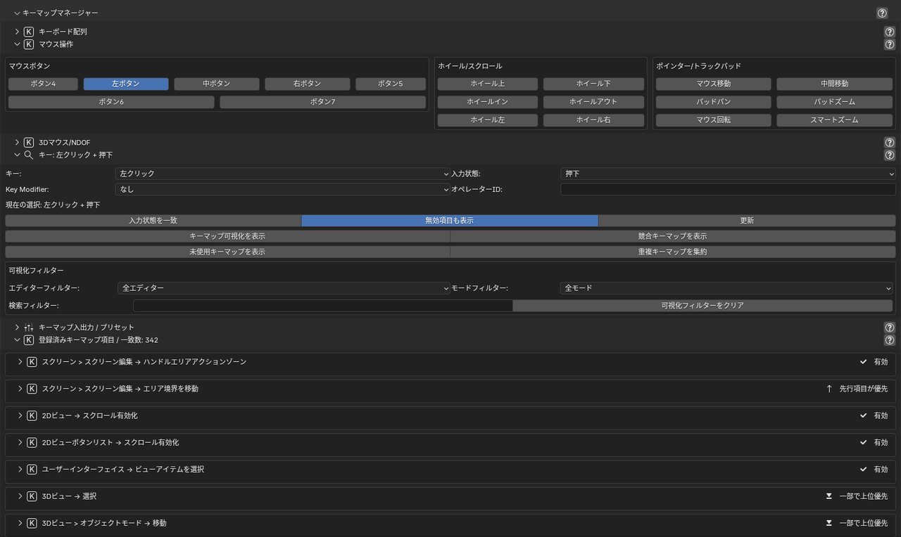
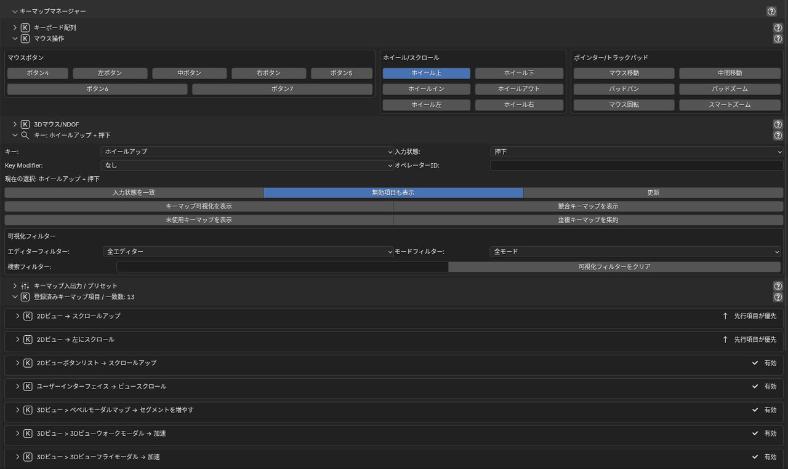
見どころ：押したボタンが青くなり、見出しの「キー:」と「登録済みキーマップ項目」の中身が、その操作の物に変わります。見出しと「キー」の欄では、「左ボタン」は「左クリック」、「ホイール上」は「ホイールアップ」と出ます。
3D マウス（NDOF。立体の向きを手で動かす専用の入力機器）のボタンを選んで調べる部分です。
場所「マウス操作」の下。初めは閉じています。見出しの右の「？」を押すと、この部分のヘルプが開きます。
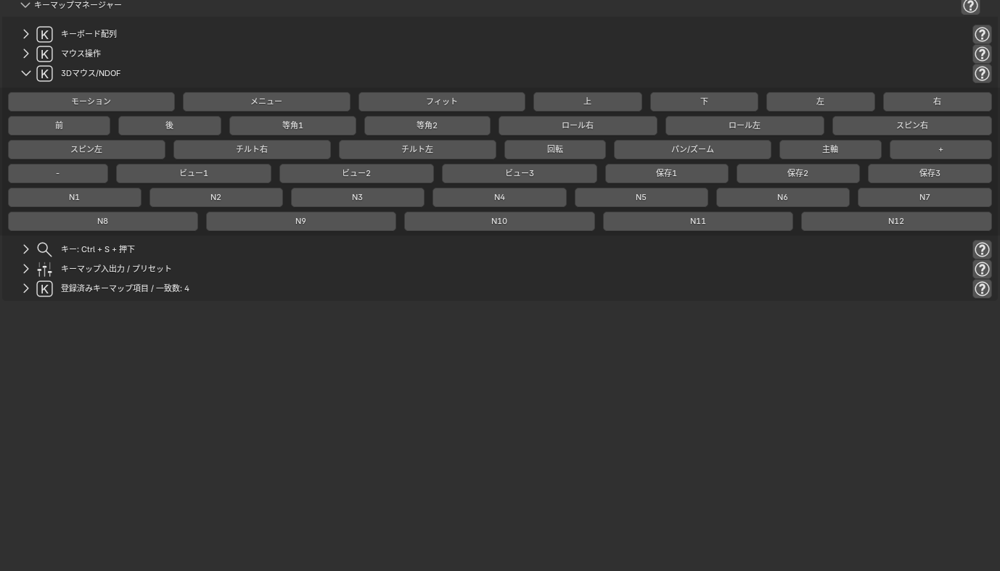
| 表示 | 働き |
|---|---|
| 3D マウスのボタン（モーション・メニュー・フィット・上・N1 など） | 押すと、そのボタンの割り当てが一覧に出ます。 |
調べるキーを欄で選び直したり、一覧の絞り方や表示の種類を切り替えたりする部分です。見出しの「キー:」の後に、今選んでいるキーと修飾キーが出ます。
場所キーボード・マウスの部分の下。初めは開いています。見出しの右の「？」を押すと、この部分のヘルプが開きます。
| 表示 | 働き |
|---|---|
| 「キー」 | 調べるキーを一覧から選びます。キーボードの絵でキーを押した時も、ここが変わります。キーの名前は [End]・[Tab]・左クリックのように、Blender のキーマップの画面と同じ表記です。 |
| 「入力状態」 | 押した時（「押下」）、離した時などの、入力の状態です。「入力状態を一致」が入っている時だけ使われます。 |
| 「Key Modifier」 | 修飾キーの代わりに使う別のキーです。特別な割り当てを調べる時だけ使います。 |
| 「オペレーターID」 | 機能の内部名（例 wm.save_mainfile）を入れると、その機能のキーを絵の上で示し、同じキーを使う割り当てと一緒に一覧にします。空にすると元に戻ります。 |
| 「現在の選択」 | ふつうの一覧の表示で「オペレーターID」が空の時に出ます。今調べているキーの組み合わせです。 |
| 「入力状態を一致」 | 入れると、「入力状態」で選んだ状態の割り当てだけを出します。切ると、押した時・離した時・クリック・ドラッグなどを全部出します。初めは切です。キーボードの絵でキーを押し直すと切に戻ります。 |
| 「無効項目も表示」 | 入れると、オフにされている割り当ても一覧に出します。初めは入です。 |
| 「更新」 | キーマップを読み直して一覧を作り直します。プリファレンスの別の場所でショートカットを変えた後に押します。 |
| 「キーマップ可視化を表示」 | 押すと、割り当て済みのキーを基準キー（修飾キーを除いたキー）ごとにまとめた一覧に切り替わります。もう一度押すと元に戻ります。 |
| 「競合キーマップを表示」 | 押すと、同じ登録場所で同じキーを使っている割り当てだけをグループにして並べます。もう一度押すと元に戻ります。 |
| 「未使用キーマップを表示」 | 押すと、カテゴリーごとにまだ使われていないキーの候補を探す画面に切り替わります。もう一度押すと元に戻ります。 |
| 「重複キーマップを集約」 | 場所・機能・キー（ドラッグの向きを含む）・オンオフ・オペレーターの設定がすべて同じ割り当てを探し、確認画面を出します。「集約」を押すと各グループの先頭 1 件だけを残し、他を削除します。残した割り当ては、そのまま動きます。アドオンの重複の写しを一部だけ編集してあった時は、編集した行も、編集していない割り当ても残ります。「キャンセル」なら何も変えません。重複が無い時は、確認画面は出ません。 |
| 「可視化フィルター」の「エディターフィルター」「モードフィルター」「検索フィルター」 | 「キーマップ可視化を表示」の一覧を、エディター、モード（キーマップの名前で絞ります）、文字（機能名・オペレーター ID・登録場所・キーの文字）で絞ります。初めは「全エディター」「全モード」です。 |
| 「可視化フィルターをクリア」 | 3 つのフィルターを元に戻します。 |
実例機能の内部名から、割り当てられたキーを探す（プリファレンスのキーマップ画面で試した様子）
「オペレーターID」に機能の内部名を入れると、その機能のキーがキーボードの絵の上で押された見た目になり、「割り当てキー」にも文字で並びます。
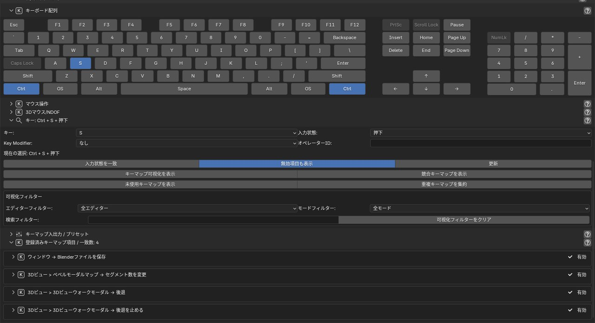
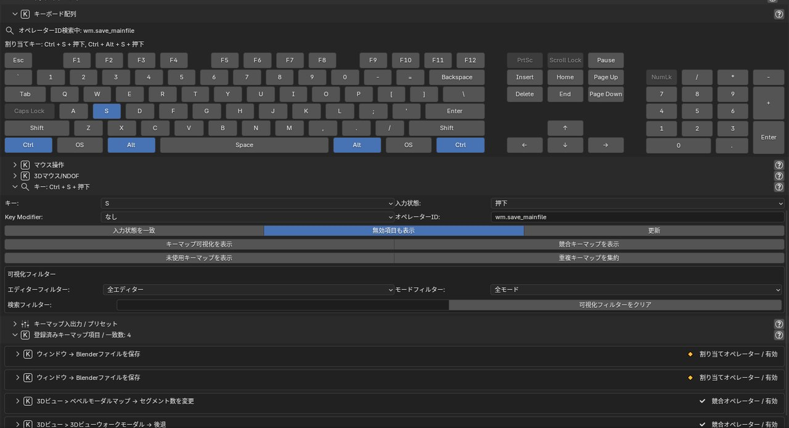
見どころ：前の図は「Ctrl」と「S」を選んだだけの状態です。後の図では、キーボードの絵で「Alt」も押された見た目になり、上に「オペレーターID検索中: wm.save_mainfile」と「割り当てキー: Ctrl + S + 押下, Ctrl + Alt + S + 押下」が出ています。下の一覧では、その機能の割り当てに「割り当てオペレーター」、同じキーを使う別の機能に「競合オペレーター」と付きます。
実例二重に入った割り当てをまとめる（プリファレンスのキーマップ画面で試した様子）
アドオンなどで同じ割り当てが二重に入っていると、後の行の状況が「先行項目が優先」と出ます。「重複キーマップを集約」で 1 件にまとめられます。
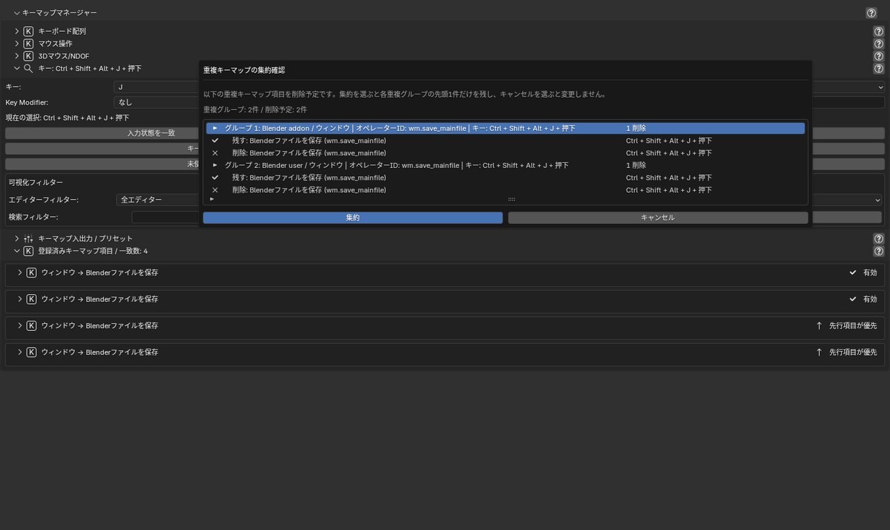
見どころ：図では、試しにアドオン側で Ctrl + Alt + Shift + J に同じ割り当てを 2 回足してあります。アドオンの割り当てはアドオン側とユーザー側の写しの 2 行で出るので、1 枚目は「Blenderファイルを保存」の行が 4 つ並び、「一致数: 4」で、後の 2 行の状況が「先行項目が優先」です。2 枚目が確認画面で、アドオン側とユーザー側の 2 グループに「残す」「削除」が 1 件ずつ並び、「削除予定: 2件」です。3 枚目は「集約」の後で、確認画面のとおり「残す」の 2 行が残り、「一致数: 2」、状況はどちらも「有効」です。ふだんの Blender に重複が無ければ、確認画面は出ません。
キーマップをファイルに書き出したり、読み込んだり、名前を付けて保存したりする部分です。
場所「キー: …」の下。初めは閉じています。見出しの右の「？」を押すと、この部分のヘルプが開きます。
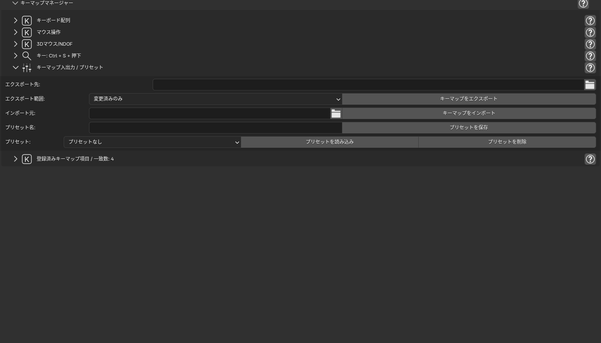
| 表示 | 働き |
|---|---|
| 「エクスポート先」 | 書き出す JSON ファイルの場所です。空のまま書き出すと、Blender のユーザー設定フォルダの中の keymap_manager_exports フォルダへ、日時の付いた名前で保存します。 |
| 「エクスポート範囲」 | 「変更済みのみ」は Blender の初期設定と違う割り当て（初期設定に無い割り当てや、オン・オフを変えた割り当て）だけ、「全キーマップ」は全部を書き出します。初めは「変更済みのみ」です。 |
| 「キーマップをエクスポート」 | 書き出しを実行します。保存した場所が「エクスポート先」に入ります。ファイルにはモーダルの割り当て、ドラッグの向き、オペレーターの設定も入ります。 |
| 「インポート元」 | 読み込む JSON ファイルを選びます。 |
| 「キーマップをインポート」 | ファイルの割り当てを今のキーマップに足します。今ある割り当ては消えません。読み込めない部分があった時は、完了の文に件数が出ます。 |
| 「プリセット名」 | 保存するプリセットの名前を入れます。 |
| 「プリセットを保存」 | 今のキーマップの全部を、その名前で Blender のユーザー設定フォルダの中の keymap_manager_presets フォルダへ保存します。 |
| 「プリセット」 | 保存済みのプリセットを選びます。何も選ばない時は「プリセットなし」です。 |
| 「プリセットを読み込み」 | 選んだプリセットの割り当てを今のキーマップに足します。 |
| 「プリセットを削除」 | 選んだプリセットのファイルを削除します。 |
実例自分のショートカットをファイルに書き出して、読み込む（プリファレンスのキーマップ画面で試した様子）
「変更済みのみ」で書き出すと、自分で足した割り当てだけがファイルになります。読み込むと、その割り当てが戻ります。
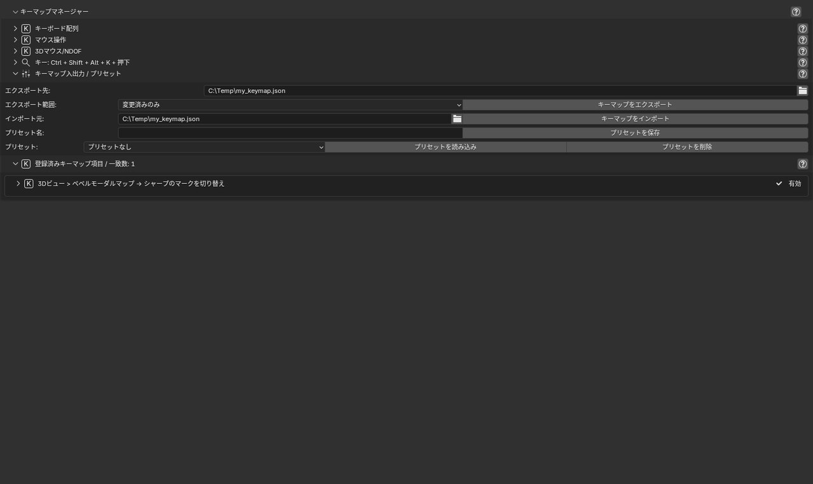
見どころ：図では、試しに Ctrl + Alt + Shift + K に「Blenderファイルを保存」を足してあります（足す操作は Blender のキーマップの画面で行います）。ファイルの場所は例です。1 枚目は書き出した所で、「エクスポート先」にファイルの場所が入っています。2 枚目は別の PC の代わりに、足した割り当てを消した状態です（残っているのは Blender の初めからあるベベルの行です）。3 枚目は読み込んだ後で、「Blenderファイルを保存」の行が戻り、「一致数」が 1 から 2 に増えています。
選んだキー（または機能）の割り当てが 1 件ずつ箱になって並ぶ部分です。見出しに件数が「一致数: 4」のように出ます。表示の種類を切り替えると、ここの中身が変わります。
場所パネルのいちばん下。初めは開いています。見出しの右の「？」を押すと、この部分のヘルプが開きます。
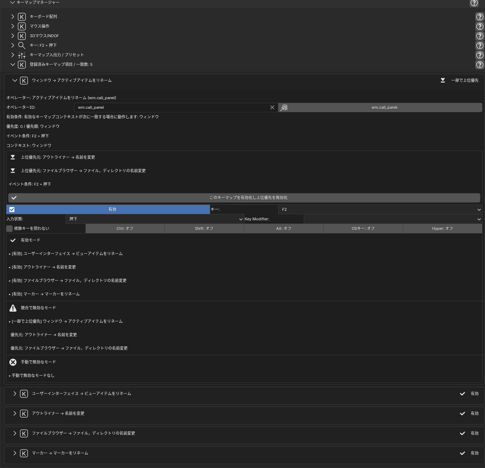
| 表示 | 働き |
|---|---|
| 各項目の 1 行目 | 左に「登録場所 → 機能名」、右に状況が出ます。左の三角で詳しい表示を開閉します。 |
| 同じ内容の行が 2 つ出る時 | アドオンが足したキーは、アドオン側の項目とユーザー側の写しの 2 行で出ます。同じ割り当てなので、状況は「重複」になりません。 写しを復元した時は、登録場所・機能・キーとオペレーターの設定が一致するアドオン側の行にも、保存した有効・無効を戻します。別の割り当ての状態は変えません。 |
| 状況「有効」 | このキーを先に受け取る割り当ては見つかりません。 |
| 状況「一部で上位優先」 | 両方が働く画面やモードでは、もっと限られた場所の別の割り当てが先に受け取ります。それ以外の場面では動きます。同時に働く割り当ての時だけ出ます。別のエディターやモードの割り当てと、モーダル（ある機能の実行中だけ働くキーマップ）は数えません。 |
| 状況「先行項目が優先」 | 同じ場所の前の項目が同じキーを使っていて、先に試されます。その場面で前の項目が実行できなければ、この項目が動きます。 |
| 状況「重複」 | 優先の度合いが同じ別の割り当てが、同じキーを使っています。 |
| 状況「無効」 | 割り当てがオフになっています。オンにするまで動きません。 |
| 「割り当てオペレーター」「競合オペレーター」 | 「オペレーターID」で調べている時に、状況の前に付きます。調べている機能か、同じキーを使う別の機能かを表します。 |
| 詳細の「オペレーター」「オペレーターID」 | 機能の名前と内部名です。内部名の欄の右の、内部名が書かれたボタンを押すと、内部名をコピーできます。モーダルの行では、内部名の欄とコピーのボタンの代わりに「モーダル値」が出ます。押すと検索の一覧が開き、そのキーで行う操作を選び直せます。 |
| 詳細の「有効条件」「優先度」「優先順」「イベント条件」「コンテキスト」 | どの画面・モードで動くか、優先の度合いと順番、キーと修飾キーの組み合わせ、登録場所を表します。 |
| 「このキーマップを有効化し上位優先を無効化」 | 状況が「一部で上位優先」の時だけ、詳細の中に出ます。先にキーを受け取る割り当て（「上位優先元」に全部並びます）をすべてオフにし、この割り当てをオンにします。押すと状況は「有効」に変わります。オフにした割り当ては、それが本来働く画面やモードでも動かなくなります。戻すには、その詳細で「有効」を入れます。 |
| 「有効」・キー・入力状態・Key Modifier | この割り当てのオン・オフ、キー、入力状態、Key Modifier をその場で直せます。Key Modifier だけは英語のまま表示されます。 |
| 修飾キーを問わない・Ctrl・Shift・Alt・OSキー・Hyper | 修飾キーの条件です。「修飾キーを問わない」を入れると、修飾キーを見なくなります。Ctrl などのボタンは押すたびにオフ（押さない）→ オン（押す）→ 任意（どちらでもよい）と切り替わります。 |
| 「有効モード」「競合で無効なモード」「手動で無効なモード」 | 同じキーの割り当てを、動く物・競合で隠れた物・自分でオフにした物に分けて並べます。 |
実例一覧の項目を開いて、中身を見る・オフにする（プリファレンスのキーマップ画面で試した様子）
一覧の項目の三角を開くと、どの画面で動くか、キー、入力状態などが見えて、その場で直せます。
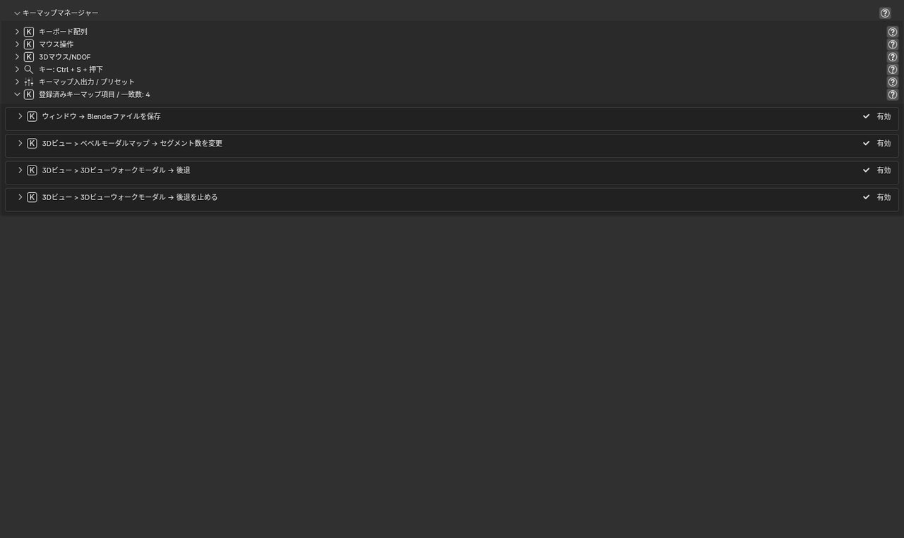
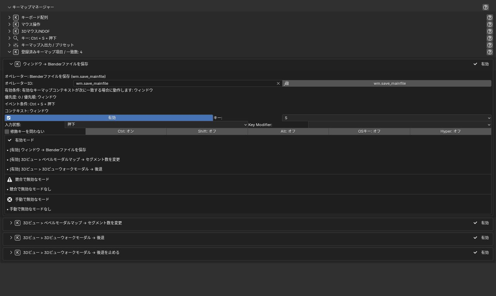
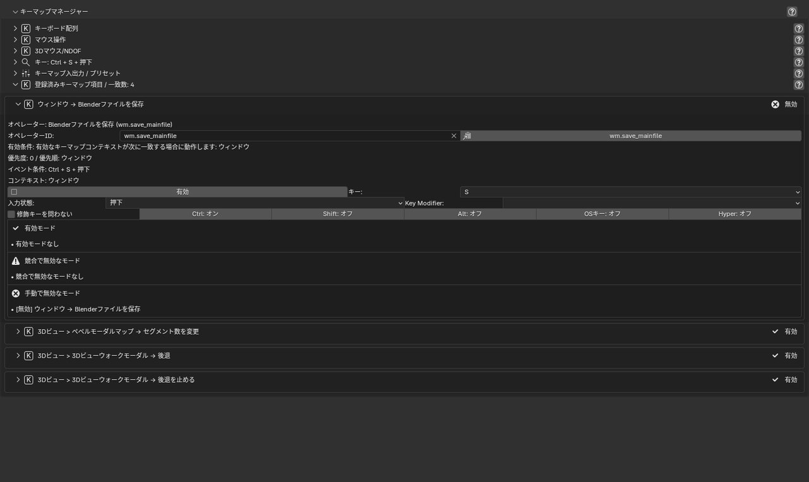
見どころ：開くと「有効条件」「コンテキスト」「イベント条件」の行や、「キー」「入力状態」の欄が出ます。「有効」を外すと、行の右の状況が「有効」から「無効」に変わります。
実例F2 の優先を切り替える（プリファレンスのキーマップ画面で試した様子）
同じ F2 を別の割り当てが先に受け取っている時は、状況が「一部で上位優先」と出ます。ボタン 1 つで、先に受け取っている割り当てをすべてオフにして、選んだ割り当てを優先できます。
見どころ：前の図では、「ウィンドウ → アクティブアイテムをリネーム」の状況が「一部で上位優先」で、「上位優先元」にアウトライナーの「名前を変更」とファイルブラウザーの「ファイル，ディレクトリの名前変更」の 2 行が並んでいます。後の図では、開いた項目の状況が「有効」に変わり、「上位優先元」とボタンは消えました。下の一覧でアウトライナーとファイルブラウザーの行は「無効」になり、「手動で無効なモード」に移っています。戻すには、オフにした項目の詳細で「有効」を入れます。
実例「？」で短いヘルプを開く（プリファレンスのキーマップ画面で試した様子）
各部分の見出しの右の「？」を押すと、その部分の使い方の短い説明が開きます。

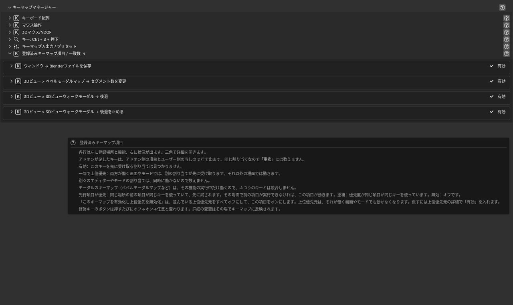
見どころ：状況の語の意味や、ボタンを押すと何が起きるかが、その場で読めます。
「競合キーマップを表示」を押した時の「登録済みキーマップ項目」の中身です。同じ登録場所で同じキーを使う割り当てを、「競合グループ」ごとの箱にまとめます。
場所「登録済みキーマップ項目」の中。
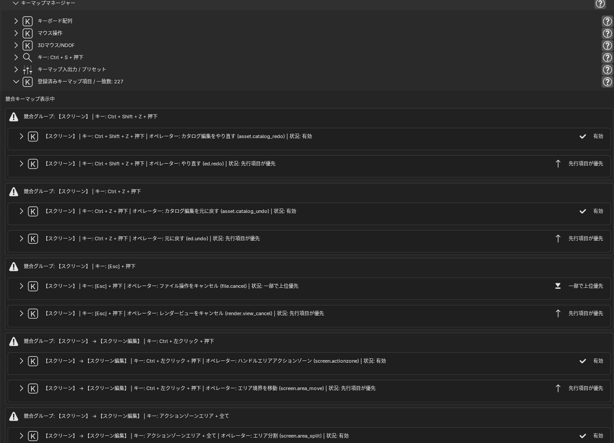
| 表示 | 働き |
|---|---|
| 一番上の「競合キーマップ表示中」の行 | この表示になっていることを示します。見出しの「一致数」は、競合している割り当ての件数です。 |
| 「競合グループ」 | 箱の見出しです。登録場所と「キー」（ショートカット）が出ます。 |
| 各項目の 1 行目 | 登録場所・「キー」・「オペレーター」（機能名と内部名）・「状況」が 1 行に出ます。「状況」は、先に受け取る方が「有効」や「一部で上位優先」、後に試される方が「先行項目が優先」のように出ます。三角で詳細を開けば、ふつうの表示と同じように直せます。 |
実例同じキーを使っている割り当てを一覧にする（プリファレンスのキーマップ画面で試した様子）
「競合キーマップを表示」を押すと、同じ登録場所で同じキーを使っている割り当てだけを、グループに分けて並べます。

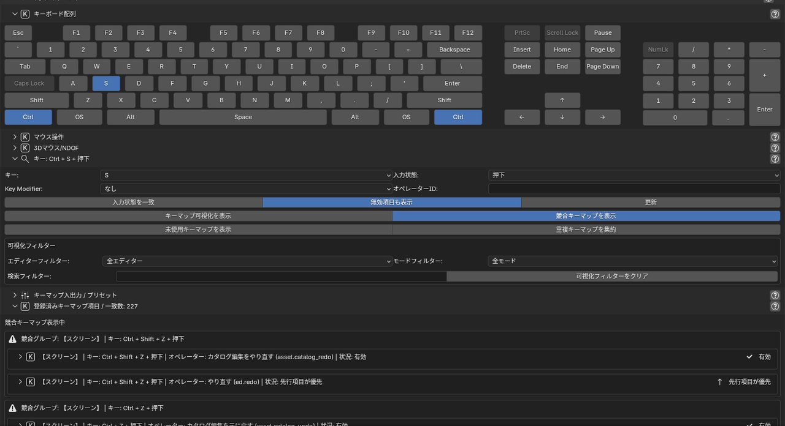
見どころ：後の図では、「競合キーマップ表示中」の下に、「競合グループ: 【スクリーン】 | キー: Ctrl + Shift + Z + 押下」のような見出しが並び、同じキーを使う割り当てがまとまります。各行の右には「有効」「先行項目が優先」のように、その割り当てが今どう扱われているかが出ます。
「未使用キーマップを表示」を押した時の中身です。カテゴリー（3D ビュー、ウィンドウなど、キーマップの登録先）を選ぶと、その分類で使われていないキーの候補が出ます。候補は選んだ分類の中だけで見ています。同じ 3D ビューでも別の分類（オブジェクトモードなど）では使われていることがあります。
場所「登録済みキーマップ項目」の中。
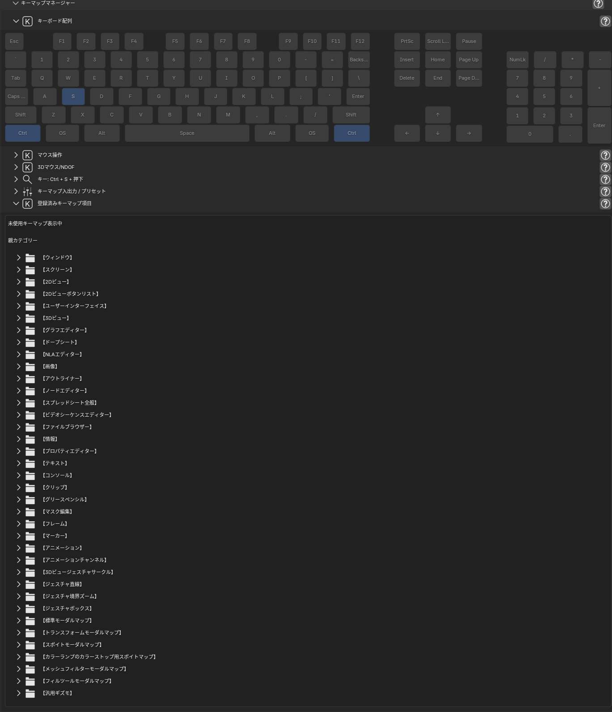
| 表示 | 働き |
|---|---|
| 「親カテゴリー」 | プリファレンスのキーマップと同じ順に並びます。左の三角で開きます。中の分類が 1 つだけの時は、開くとすぐに候補が出ます。 |
| 「サブカテゴリー」 | 親カテゴリーに中の分類がいくつかある時に出ます。押すとそこの候補が出ます。 |
| 「未使用ショートカット候補」 | 選んだ分類で空いているキーの候補です。「基準キー」（修飾キーを除いたキー）ごとにまとめ、中に修飾キーとの組み合わせを並べます。基準キーのまとまりは初めは閉じています。使う前に、もう一度「未使用キーマップを表示」を押して元の表示に戻し、キーボードの絵でそのキーを押すと、ほかの分類で使われていないかを確かめられます。 |
実例3Dビュー（グローバル）で空いているキーを探す（プリファレンスのキーマップ画面で試した様子）
「未使用キーマップを表示」を押して分類を選ぶと、その分類でまだ使われていないキーの候補が、基準キーごとに出ます。
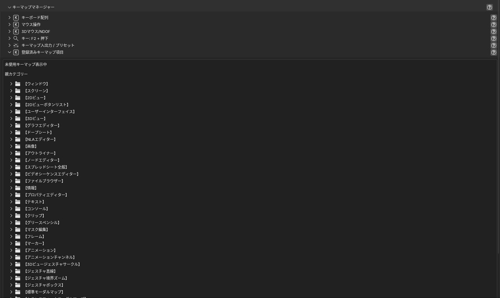
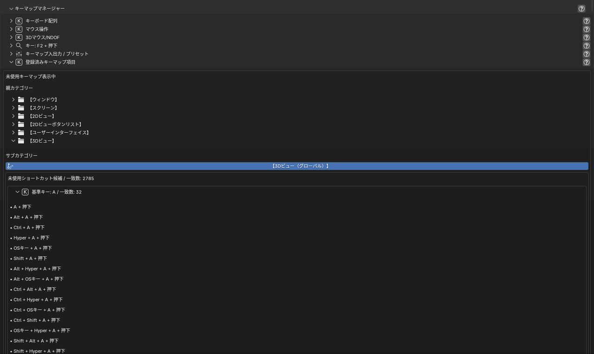
見どころ：前は「親カテゴリー」の一覧だけです。後は選んだ分類の「未使用ショートカット候補」の件数が出て、基準キーを開くと空いている組み合わせが並びます。候補は選んだ分類の中だけで見ています。図の「A + 押下」のように、同じ 3D ビューでも別の分類（オブジェクトモードなど）では使われていることがあります。
「キーマップ可視化を表示」を押した時の中身です。割り当て済みのキーを基準キーごとにまとめ、「可視化フィルター」で絞った結果を見ます。
場所「登録済みキーマップ項目」の中。
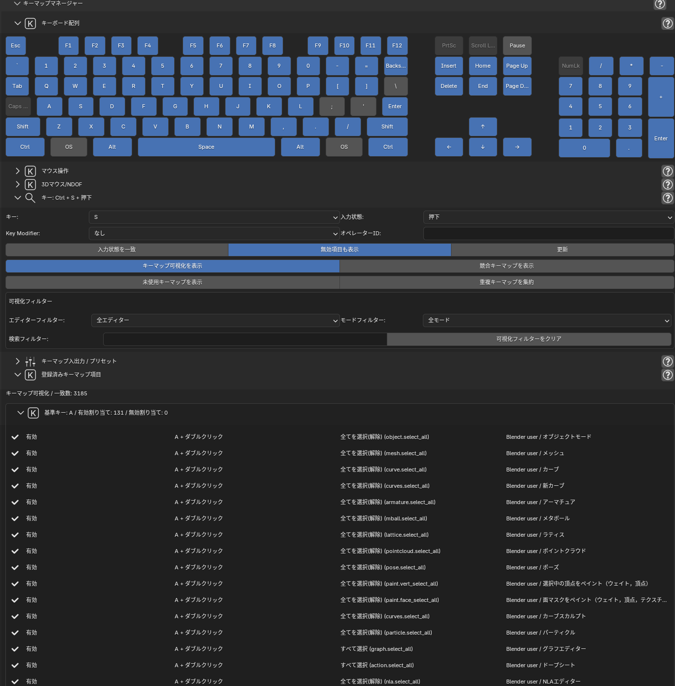
| 表示 | 働き |
|---|---|
| 「キーマップ可視化 / 一致数」 | 絞り込んだ割り当ての件数です。 |
| 各キーの見出し（「基準キー」「有効割り当て」「無効割り当て」） | キーごとに、オンの割り当てとオフの割り当ての件数が出ます。三角で開くと、状況・キー・機能名・登録場所が 1 行ずつ出ます。キーのまとまりは初めは閉じています。 |
実例割り当て済みのキーをキーごとにまとめて見る（プリファレンスのキーマップ画面で試した様子）
「キーマップ可視化を表示」を押すと、割り当て済みのキーを基準キーごとにまとめた一覧に切り替わります。

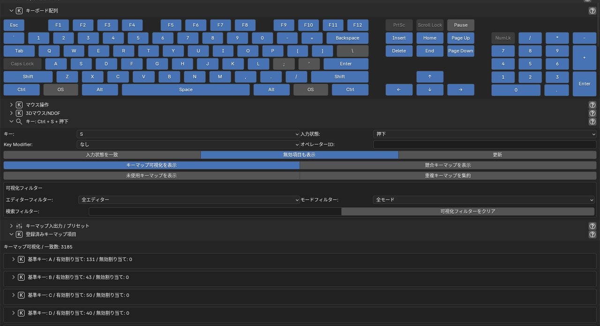
見どころ：後の図では、キーボードの絵で割り当てのあるキーが青く塗られ、下の一覧は「基準キー: A / 有効割り当て: 131 / 無効割り当て: 0」のように、キーごとに割り当ての件数をまとめた行に変わっています。
Ctrl+S などのキーの割り当てを全部見る
結果：そのキーを使う機能と、動いている物・隠れている物が分かります。
ある機能がどのキーに割り当てられているか知る
結果：その機能のショートカットと、同じキーを使う別の機能が分かります。
別の割り当てが先に受け取っているキーを、選んだ割り当てで動くようにする
結果：「上位優先元」に並んでいた割り当てがすべてオフになり、選んだ割り当てがオンになって、状況が「有効」に変わります。オフにした割り当ては、それが働く画面やモードでも動かなくなります。戻すには、その詳細で「有効」を入れます。
設定まで全部同じ割り当ての重複を消す
結果：各グループの先頭 1 件だけが残り、残したキーはそのまま動きます。重複が無い時は「集約対象の重複キーマップは見つかりませんでした。」と出ます。
変えた割り当てだけをファイルにして移す
結果：ファイルの割り当てが足されます。今ある割り当ては消えません。
新しい機能に使えるキーを見つける
結果：選んだ分類でまだ使われていないキーの候補が分かります。同じ 3D ビューでも別の分類では使われていることがあるので、最後に確かめてから使います。
アドオンが出ない・日本語にならない、など全部のアドオンに共通のことは、全体仕様書の「困った時」を見てください。
| アドオン | KeymapManager（keymap_manager） |
|---|---|
| 版 | 1.0.0 |
| ZIP | KeymapManager_1.0.0.zip |
| 大きさ | 50,567 バイト |
| SHA256 | 307c265d76a8da5034ec4d6c8c06b6833c6d2f10bb15e6f001db1e79c731cc98 |
KeymapManager 解説書 v1.0.0 ／ 2026-11-18 作成